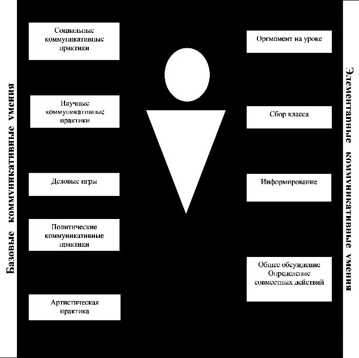
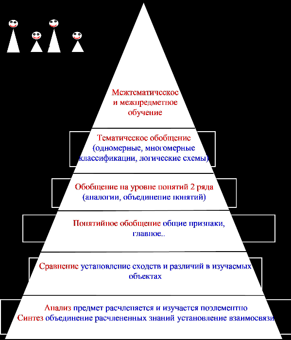

Учебно-организационные умения
1. Определить учебные задачи для индивидуальной и коллективной деятельно-сти.2. Определить наиболее рациональную последовательность по индивидуальному и коллективному выполнению учебной задачи.
3. Ставить общие цели самообразовательной деятельности по учебным предме-там и определять наиболее рациональную последовательность действий по вы-полнению целей.
4. Владеть различными средствами самоконтроля с учетом специфики изучае-мого материала.
5. Самостоятельно оценивать свою учебную деятельность посредством сравне-ния с деятельностью других учеников, с собственной деятельностью в прошлом с установленными нормами.
6. Оценивать деятельность одноклассников посредством сравнения с установ-ленными нормами, с их деятельностью в прошлом.
7. Определить проблемы собственной учебной деятельности и устанавливать их причины.
8. Вносить необходимые изменения в содержание, объем учебной задачи, в по-следовательность и время ее выполнения.
Учебно-коммуникативные умения
1. Слушать.
2. Слушать и записывать.
3. Слушать и вносить изменения в текст.
4. Излагать свои мысли на бумаге и в слух.
5. Аргументировать и доказывать.
6. Выступать перед аудиторией.
7. Вести диалог.
8. Высказывать свои мнения, формулировать вопросы.
9. Анализировать и выявлять связи.
10. Обобщать и интерпретировать.
Учебно-коммуникативные общеучебные умения и навыки позволяют школьнику организовать сотрудничество со старшими и сверстниками, достигать с ними взаимопонимания, организовывать совместную деятельность с разными людьми.
К таким навыкам относятся:
выслушивание мнения других;
владение различными формами устных и публичных выступлений;
оценка разных точек зрения;
владение приемами риторики;
организация совместной деятельности;
владение культурой речи;
ведение дискуссии.
Памятка для учителя по формированию учебно-коммуникативных умений.

Учебно-информационные умения
1. Умение мыслить: умение абстрагировать, умение находить причинно-следственные связи, исследовательские умения, умение синтезировать, анализировать, сравнивать и обобщать.
2. Навыки логического мышления.
3. Навыки эвристического мышления.
Составляющие компоненты
4. Работа с основными компонентами учебника
5. Использование справочной и дополнительной литературы
6. Различение и правильное использование разных литературных стилей
7. Подбор и группировка материалов по определенной теме
8. Составление планов различных видов
9. Создание текстов различных типов
10. Владение разными формами изложения текста
11. Составление на основе текста таблицы, схемы, графика
12. Составление тезисов, конспектирование
13. Подготовка рецензии
14. Владение цитированием и различными видами комментариев
15. Подготовка доклада, реферата
16. Использование различных видов наблюдения
17. Качественное и количественное описание изучаемого объекта
18. Проведение эксперимента
19. Использование разных видов моделирования.
